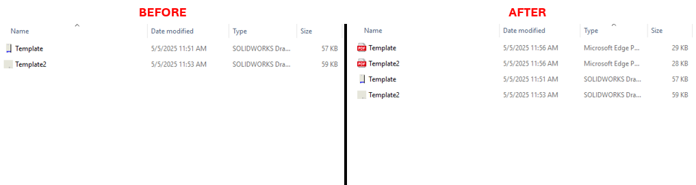

Rebuild & Save All Drawings in a Directory as PDF
Description
This macro rebuilds all SolidWorks drawing files (.SLDDRW) in a specified directory and saves them as PDF files in the same location. It automates the process of batch exporting drawings to PDFs, making it ideal for users who need to handle large quantities of files efficiently.
System Requirements
- SolidWorks Version: SolidWorks 2014 or newer
- Operating System: Windows 10 or later
- Excel Version: Microsoft Excel 2010 or later (for Excel integration features)
Pre-Conditions
Note
- The folder containing the SolidWorks drawings must be specified in the code.
- SolidWorks must be installed and running on the machine.
Results
Note
- PDF files will be saved in the same location as the SolidWorks drawings.
- The original drawing files will remain unchanged.
VBA Macro Code
' Disclaimer:
' The code provided should be used at your own risk.
' Blue Byte Systems Inc. assumes no responsibility for any issues or damages that may arise from using or modifying this code.
' For more information, visit [Blue Byte Systems Inc.](https://bluebyte.biz).
Option Explicit
' Define the main variables for SolidWorks application and model
Dim swApp As SldWorks.SldWorks
Dim swModel As ModelDoc2
Dim swFilename As String
Dim swRet As Boolean
Dim swErrors As Long
Dim swWarnings As Long
Dim swResponse As String
' Main subroutine
Sub Main()
' Initialize SolidWorks application
Set swApp = Application.SldWorks
' Specify the folder location containing the SolidWorks drawings
RebuildAndSaveAllDrawingsAsPDF "C:\SOLIDWORKS", ".SLDDRW", True
End Sub
' Subroutine to rebuild drawing and save as PDF
Sub RebuildAndSaveAllDrawingsAsPDF(swFolder As String, swExt As String, swSilent As Boolean)
Dim swDocTypeLong As Long
' Ensure the file extension is in uppercase
swExt = UCase$(swExt)
swDocTypeLong = Switch(swExt = ".SLDDRW", swDocDRAWING, True, -1)
' If the file type is not supported, exit the subroutine
If swDocTypeLong = -1 Then
Exit Sub
End If
' Change directory to the folder
ChDir (swFolder)
' Get the first file in the folder
swResponse = Dir(swFolder)
Do Until swResponse = ""
swFilename = swFolder & swResponse
' Check if the file extension matches
If Right(UCase$(swResponse), 7) = swExt Then
' Open the SolidWorks document
Set swModel = swApp.OpenDoc6(swFilename, swDocTypeLong, swOpenDocOptions_Silent, "", swErrors, swWarnings)
' Rebuild the drawing if it's a drawing file
If swDocTypeLong <> swDocDRAWING Then
swModel.ShowNamedView2 "*Isometric", -1
End If
' Define file path variables
Dim swFilePath As String
Dim swPathSize As Long
Dim swPathNoExtension As String
Dim swNewFilePath As String
swFilePath = swModel.GetPathName
swPathSize = Strings.Len(swFilePath)
swPathNoExtension = Strings.Left(swFilePath, swPathSize - 6)
swNewFilePath = swPathNoExtension & "PDF"
' Save the document as PDF
swRet = swModel.SaveAs3(swNewFilePath, 0, 0)
' Close the document
swApp.CloseDoc swModel.GetTitle
End If
' Get the next file in the folder
swResponse = Dir
Loop
End Sub
Macro
You can download the macro from here
Customization
Need to modify the macro to meet specific requirements or integrate it with other processes? We provide custom macro development tailored to your needs. Contact us.